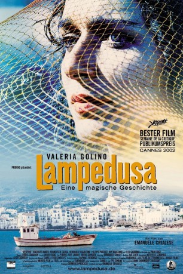

#11739 Lampedusa
Alternativ: Respiro (Englischer Titel)
 
 IMDB-Wertung: 7.0 / 10
IMDB-Wertung: 7.0 / 10  Metascore: 65
Metascore: 65 
Italienisch-französische Koproduktion aus dem Jahr 2002. Regisseur und Drehbuchautor Emanuele Crialese erzählt die Geschichte der schönen Mutter Grazia, die auf der Insel Lampedusa (Valeria Golino) für Aufregung sorgt, weil sie mit ihrer Unbefangenheit und mit ihren Launen nicht gut ankommt, was besonders für ihren Ehemann eine Herausvorderung darstellt.
Jahr: 2002
Dauer: 91 Minuten
FSK: 6
Land: Italien Studio: CinemienTonspuren:
Untertitel:
Auflösung: SD (576x304) Größe: 700 MB
Genre: Drama
Regisseur: Emanuele Crialese
Drehbuch: Emanuele Crialese
Soundtrack: Andrea Guerra, John Surman
Darsteller:
 Valeria Golino als Grazia
Valeria Golino als Grazia- Vincenzo Amato als Pietro
- Francesco Casisa als Pasquale
- Veronica D'Agostino als Marinella
- Filippo Pucillo als Filippo
- Elio Germano als Pier Luigi
- Muzzi Loffredo als Nonna
- Avy Marciano als Velista Francese
- Giuseppe del Volgo als Zio Pino
- Matteo Solina als Zio Antonio
- Vincenzo Barreca als Cefalo
- Pasquale De Rubels als Bufalo
- Francesco Edoardo Anglieri als
- Andrea Barreca als
- Donatella Battiali als
- Domenico Amato als
- Fernando Bartifeci als
- Giovan Battista Martello als
- Vincenzo Bellici als
- Maria Catia Belviso als
- Debora Billeci als
- Vincenzo Cantalla als
- Denise Capogrosso als
- Aldo Chessari als
- Antonio Costa als
- Francesco Costanza als
- Vincenza Davi als
- Vincenzo Davi als
- Roberto De Simone als
- Francesca Dell'Imperio als
- Giacomo Galozzo als
- Antonio Laterzo als
- Nunzio Lucifora als
- Antonino Maggiore als
- Giovanna Maggiore als
- Ioland Maggiore als
- Giovanni Mannino als
- Nicola Mannino als
- Angela Maraventano als
- Domenico Martello als
- Flora Miotti als
- Giuseppe Palmisano als
- Angelo Pucillo als
- Fabio Pucillo als
- Maria Pucillo als
- Pasquale Pucillo als
- Roberto Pucillo als
- Giuseppe Rupelli als
- Orlando Rupelli als
- Gaspare Sanguedolce als
Datei: X:\2002\Lampedusa (2002, FSK6, 576x304).avi seit 14.09.2019
Festplatte: Gemischt-01+Anime
 Es gibt insgesamt 93 Filme in der Gruppe '2002'
Es gibt insgesamt 93 Filme in der Gruppe '2002'